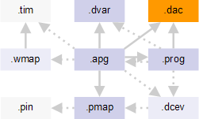

Device access file
The device access file describes which bitstreams need to be sent to device pins to execute specific operations on the device, translating logical calls to concrete waveforms. The device access defined in the device access file are called from the APG program file.

The device access file has the .dvac file name extension. It is referenced from the APG pattern file with the :deviceAccess: keyword.
In addition, device access files also declare parameters from the device architecture files that are to be used in device access specifications and define constants, also to be used in device access specifications.
Example
:deviceAccess:
{
:version: 1.0
:deviceParam:
{ xBits yBits dBits }
:groups:
{
:format:
{ :name: :size: }
{ x_address 10 }
{ y_address 8 }
{ data 16 }
}
:apgAccess:
{
:name: write_access
:interface:
{ xAddr yAddr dataw }
:table:
{
:format:
{ :pin: :states: :data: }
{ CS_ {0 1} 0 }
{ OE_ {0 1} 1 }
{ WE_ {0 1} 0 }
{ BHE_ {0 1} 0 }
{ BLE_ {0 1} 0 }
{ x_address (0 1} xaddr(xAddr,yAddr) }
{ y_address {0 1} yaddr(xAddr,yAddr) }
{ data {L H} data(dataw,xAddr,yAddr) }
}
}
:apgAccess:
{
:name: read_access
:interface:
{ xAddr yAddr dataw }
:table:
{
:format:
{ :pin: :states: :data: }
{ CS_ {0 1} 0 }
{ OE_ {0 1} 0 }
{ WE_ {0 1} 1 }
{ BHE_ {0 1} 0 }
{ BLE_ {0 1} 0 }
{ x_address {0 1} xaddr(xAddr,yAddr) }
{ y_address {0 1} yaddr(xAddr,yAddr) }
{ data {L H} data(dataw,xAddr,yAddr) }
}
}
:apgAccess:
{
:name: "NMT_Rx6"
:interface: { ... }
:table:
{
:format:
{ :pin: :states: :data: :operation: }
{ Rx6.000 {0 1} 0 ~ }
{ ~ {0 1} 0 crc(NMT_Rx6_crc,6)[0] }
{ ~ {0 1} 0 crc(NMT_Rx6_crc,5)[0] }
}
}
}Functional changes
- Introduced before SmarTest 6.3.2